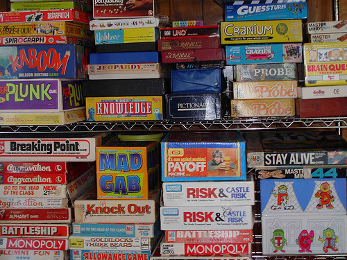

Cards games or board games.
Magic Tactil tends to be adaptable with any cards games or board games, such as Munchkin, Android : NetRunner, Kings of Tokyo, 7 Wonders, LaserGame Khet 2.0, Magic The Gathering, etc.
If you own a game and want to spread it online. Contact us, we can provide very quickly the applications related to your game.
You said tactile devices ?

So far so good! Magic Tactil is made for playing games
on touchscreen terminals as Surface touchpad, Android touchpad and iPad.
But that is not all! Magic Tactil implements functionalities to be a true fellowship platform
for passionate players all around the world. Besides we can deploy
a lite (social) version for smaller terminals running on Android, iOS and Windows
Phone.
Features
Depending the game and your needs, Magic Tactil can implement the following features:
-
Playing :
- User can find a single opponent to play but even create a tournament
!
Testing and Ranking Mode:- We can separate the application in two modes, a testing one for training. And a ranked one for players who likes competition.
Collection manager:- Magic Tactil can implement a collection manager (cards collection for instance)
Deck Building :- If your game needs the user to build a deck, we have a deck building module.
Magic Tactil is also a community platform with the following main features :
:
- Manage a list of friends :
- And keep in touch with them, user can ask them to join a tournament.
Reward system :- The user is rewarded for playing, so he/she can unlock some bonus. More big rewards may be awarded to players in tournaments with their
friends.
Exchanges system :- Exchange stuffs (cards, emblems, characters etc...) with other players, user can directly exchanging with
his/her friends or through a generalized transaction system. Direct exchanges
between friends may be more interesting for players.
Post an events related to your game :- If the user is a store holder, an association or simply wants to organize an event related to your game (tournaments, conventions...) and wants to involve the maximum of people. He/She can use Magic
Tactil to broadcast his/her events. In the same way, if the user is searching a real
life tournament, he may have a look at posted events online and meet players near
him/her!
We are also able to implements custom functionalities for your game if you ask it. But might take some time...